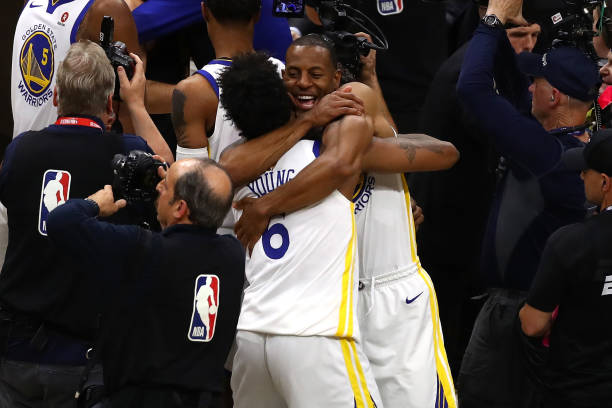
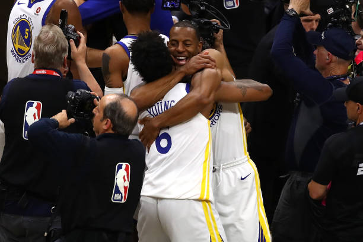

Twenty teams will compete in the premier league – the top seventeen teams from the previous season and the three teams promoted from the Championship. The promoted teams are Burnley, Sheffield United and Luton Town, who will return to the top flight after respective absences of one, two and thirty-one years. This will also be Luton Town's first season in the Premier League.[4] With their promotion, Luton Town will become the first team to have been promoted from non-league (5th tier or lower within the English football league pyramid) to the top flight during the Premier League era, and they are the first ever side to do it since promotion/relegation within the Football League's fourth tier was allowed. They will replace Leicester City, Leeds United and Southampton, who were relegated to the Championship after respective spells of nine, three and eleven years in the top flight.
Golden State Warriors forward Andre Iguodala said he missed time during the 2018 playoffs with a fractured leg, despite the team claiming it was a bone bruise. Iguodala made the comments on Tuesday on The Breakfast Club radio show while discussing Kevin Durant’s injury situation in Golden State’s playoff run this year. Durant suffered a ruptured Achilles in Game 5 of the NBA Finals after he returned from a calf injury. Iguodala’s comments about his 2018 injury could renew questions about Golden State’s medical staff and procedures. “Our training staff is one of the best in the world. And I feel like they got (Durant) back. The tough thing is, when you’re an athlete and you’re hurt, everybody is looking at you sideways,” Iguodala said. “Last year, it happened to me. I missed the last three games of the Houston series. It goes to Game 7. We barely get out of that series. And now they’re looking at me like, ‘When are you coming back?’ And I had a fractured leg. But it’s being put out there like, ‘You’ve got a bone bruise.’ Nah, it’s fractured.” Iguodala continued: “So I’m fighting with the team. I’m fighting with people. I’m fighting with the media. And then my teammates ask me every day, ‘How you feeling? How you feeling?, it was hard ! .”
 

The UEFA Champions League is UEFA's elite club competition with top clubs across the continent playing for the right to be crowned European champions. The tournament, then called the European Cup, began in 1955/56 with 16 sides taking part. It changed into the Champions League in 1992/93 and has expanded over the years with a total of 78 clubs entering in 2022/23. Qualifying begins in the summer with three rounds and then a play-off taking place before 32 teams begin the group stage starting in September. The group stage involves eight groups of four teams, with each club playing everyone else in that group home and away. The top two sides in each group move on to the round of 16 and the start of the knockout phase, while the third-placed team drops into the UEFA Europa League. The round of 16, quarter-finals and semi-finals are played over two legs, home and away, while the final is hosted by a stadium which is selected almost two years in advance. There have been three Premier League winners of the UEFA Champions League since it was formed, Manchester United (twice; in 1998/99 and 2007/08), Liverpool (twice; 2004/05 and 2018/19) and Chelsea (twice; 2011/12 and 2020/21). Those five wins have produced plenty of drama. United staged an astonishing comeback with two goals in two stoppage-time minutes to defeat Bayern Munich 2-1 in 1999 while, in 2005, Liverpool fought back from 3-0 down at half-time against AC Milan to force extra-time before winning the contest on penalties, the final being known as the Miracle of Istanbul. United then beat Chelsea on penalties in 2008 in the first European Cup final to be played between two English teams but the Blues became the first London side to win the Champions League trophy four years later when they defeated Bayern Munich on penalties in Munich. In 2018/19, Liverpool beat Tottenham Hotspur 2-0 in an all-Premier League final, in the same season in which English sides Arsenal and Chelsea contested the Europa League final. Two years later, Manchester City and Chelsea made it a third all-Premier League final, with the latter claiming a second triumph. England have won 14 European Cup/Champions League titles in total, with Liverpool leading the way with six triumphs. Man Utd have three, Chelsea and Nottingham Forest have two, while Aston Villa have won it once. The Premier League representatives in the 2022/23 Champions League group stages are Premier League champions Man City, Liverpool, Chelsea and Spurs.